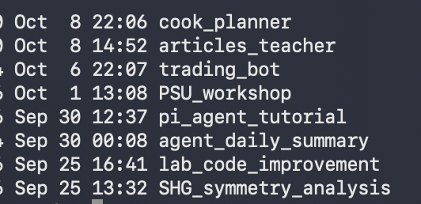
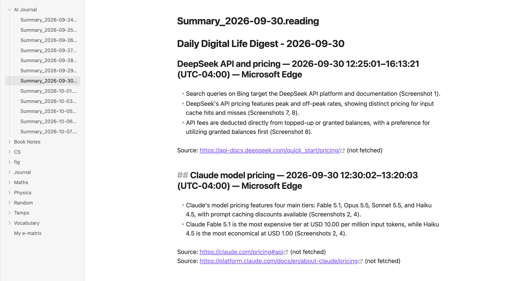
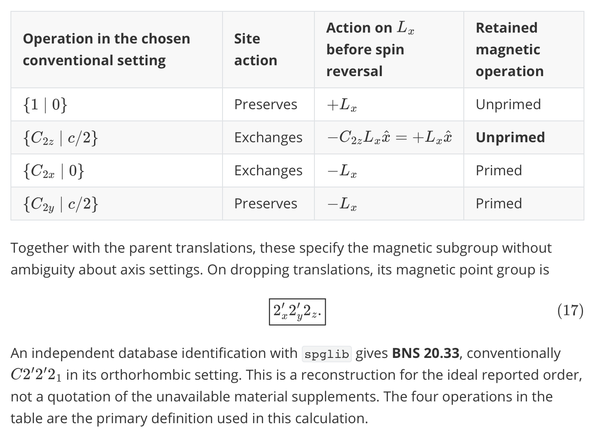
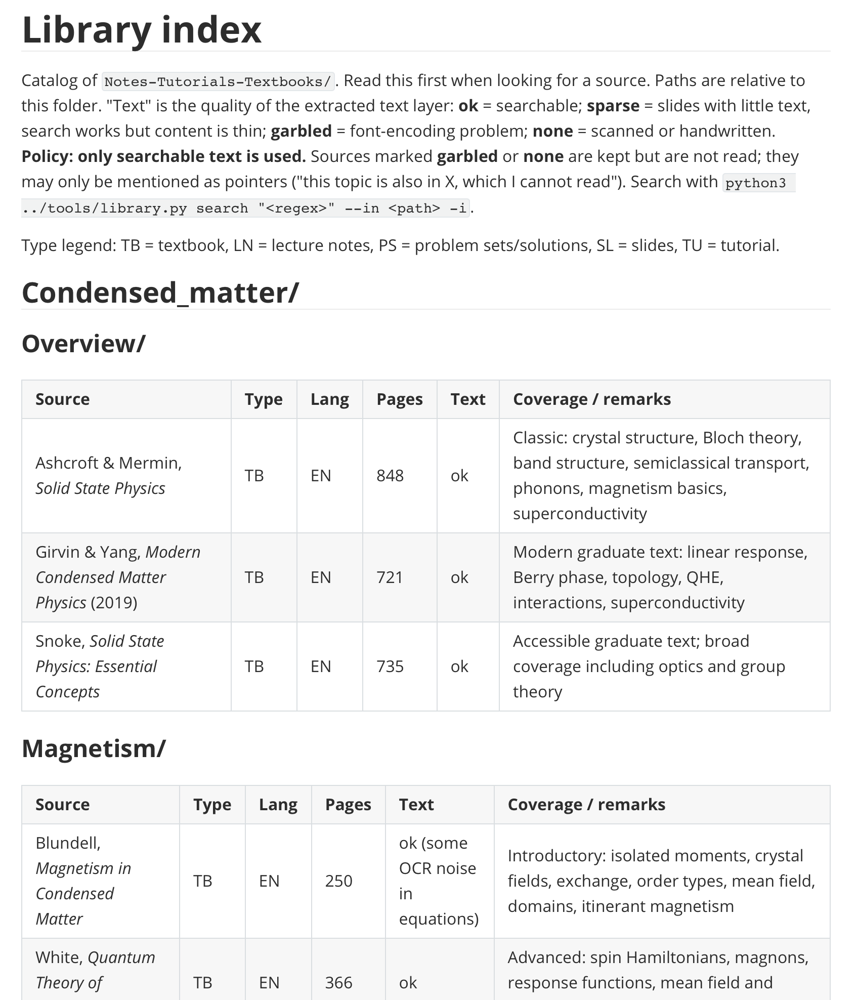
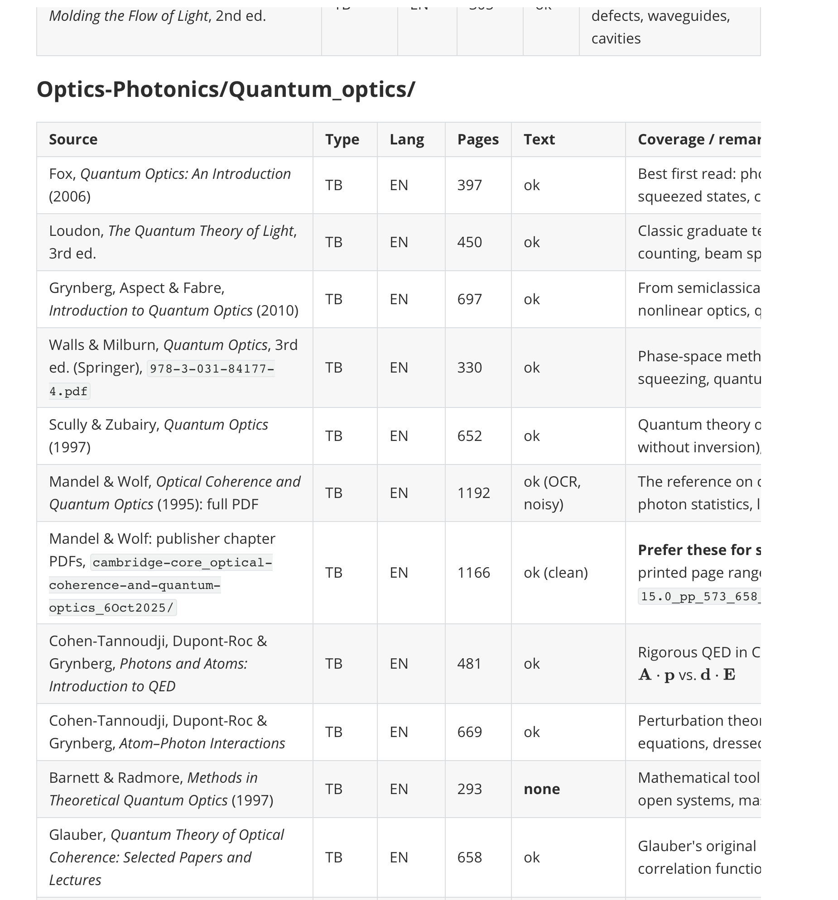
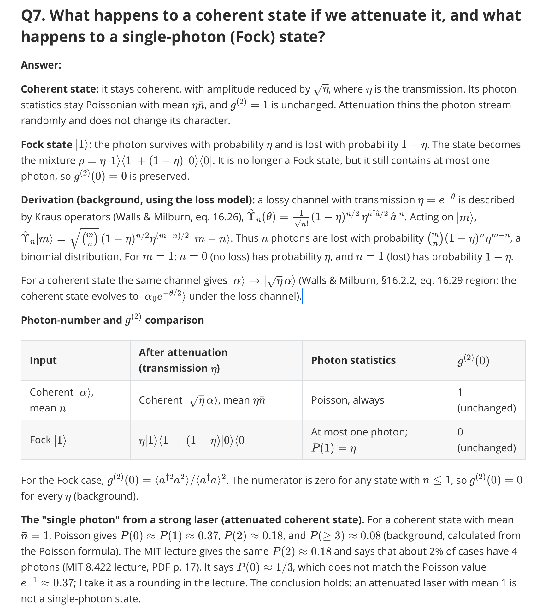

Agent时代，未来已来
本来是想让agent读一下我这个blog的所有内容，然后以我的口吻生成这一篇，主要表达对agent时代到来的感慨。后来转念一想，当时搭这个blog的时候还是自己大三寒假的时候辛辛苦苦古法查教程手搓研究配置出来的，就不要在让agent污染这一块我作为人类最后的净土了，所以我决定对于这个blog之后所有的内容都坚持手搓。以上是题外话，接下来进入正题。
一个多月以前，我仍然还在用网页端的chatbot，在对话框里问问题，提要求，然后把AI生成的回答粘贴到文档里，又或是把它生成的仪器控制或者处理数据的code粘贴到我的IDE中。
一切的开始来源于我偶然间刷到jyy老师的暴论——“没有token的学生应该直接退学”。作为NJU毕业的学生（虽然不是学CS的），但也早就听身边的同学推荐过操作系统课，于是对这个话题格外的上心。接着抱着听着玩玩的心态，追本溯源，打开了生成式软件工程这门课，就好像打开了新世界的大门，听得津津有味。
后来听说openai烧了多少多少token，用了多少多少agent解决了流体力学问题，终于才决定充点钱自己试试，看看它对于我的生活或是research到底有多少帮助？
这一试就一发不可收拾，它给我带来的震撼是逐层递进，难以言表的。我现在的感觉是：
- agent的到来对于我这种想法和idea很多，但懒得行动实现的人来说简直是太幸福了。
- 两年前的模型还很蠢很蠢且只有很少的上下文，当时做暑研时候处理数据的代码以及申请要的文书都是自己手搓，后来写毕业论文的时候本来想让它随便水一个开题报告，但发现它引用的文章都是自己编出来的；一年前的模型可以勉强解决一些不复杂的，物理学本科level的课后习题；而现在的模型解决数学猜想的新闻层出不穷，眩晕瘫坐，更是让人感觉其无所不能。这种左脚踩右脚的能力让其发展，迭代速度越来越快。而对我来说，从一个多月以前的小白到现在熟练理解并使用，它也的确成倍的提升了人类学习知识的速度和生产力。
- 小时候看火影，中间讲鸣人为了学风遁螺旋丸还是啥的时候，给自己创建了一群影分身，每个影分身都在学习，最后复原的时候汇集了所有分身的经验，大大提升了效率。agent和人实在是太像了，agent能干人在数字端干的所有事情（最近很火的muse的形象就是一个可爱的形象抱着电脑在工作），而人脑本质上就是一个LLM。所以我现在反而会投身在一些和agent有区别的事情上，比如运动。
- ai的天花板在哪里？我更倾向于认为ai是没有天花板的，一切你觉得它到天花板的行为都源于给它的prompt不精准，不充足。因为LLM就是人脑，而人类的发展进步是没有天花板的。More is different。
我来按时间顺序总结一下到现在我都让ai干了什么：

agent_daily_summary：我之前一直有写日记的习惯，会简单总结一下今天做了什么，看了什么有意思的文章、视频之类的。有时候太累或者太晚就懒得写了。现在我让ai写了个项目，基本流程是对特定的窗口定时截图，然后根据固定的prompt再每晚推送给LLM，让它生成总结。这样我对我每天的数字生活都有记录。（印象中之前微软好像要推这个功能后来因为隐私问题下架了，我每次推给LLM的时候都会审阅一下所有截图，这样就不会有很大的隐私问题）。

SHG_symmetry_analysis：当时要推一个材料的SHG信号，抱着试一试的心态让astra大人大显身手。给它了一个folder里面都是SHG相关的文章，另一个folder里面都是这个材料相关的文章。写好prompt，然后gpt6-astra启动！不到5分钟给我了一个包含详细推导过程和各种情况，全文6000字的文档。然后我动手自己推了一下，它的结果完全没有问题。（我的体会是ai对于这种固定流程的推导，即first principle toolkit，是轻车熟路的，它相对于人的优点在于人会犯错，人会累，人要花很多时间，而ai不会。于是最近的新闻声称解决了Feynman diagram算到多少圈是可以理解的。但是ai在产生全新的理解、框架、工具或者范式方面存在着天花板）。

- articles_teacher：这是一个我代表学习空间repo。里面有一个library，汇集了我从本科到现在搜集的一堆教材（90%没有仔细读过）和我的notes。AI细心地帮我整理了一下，并且做了一个index，供它自己之后回答我问题的时候查阅。另有一个Instrument的folder包含了lab所有仪器的manual，datasheet，tutorial。还有一个articles的folder包含我所有的文献，可以和文献管理软件联动。写好相应的AGENTS.md文档，跟它说你是一个condense matter experiment的research assisant云云，然后告诉它怎么从library里查阅资料。使用的场景就是每当我读文章，查仪器手册或者读书学习的时候，有问题问它就行，它会自行查阅资料，推导，回答，告诉我source并记录所有问题和回答。自此之后，我在读文章或者学习的时候感觉顺畅多了。而且亲测只需用最低级的模型，比如luna或者haiku就能很好的解决这些问题。



- 然后是几个不重要的：pi_agent_tutorial（自己生成了一个如何使用它自己的教程，使我的学习飞速）；lab_code_improvement（把原来控制仪器和处理数据的屎山代码喂给它，根据我的想法帮我修改，写文档）；PSU_workshop（上周参加了一个workshop，把schedule喂给它，它自己去查资料读背景，边听talk它边自动帮我做notes）。
- 最后是几个生活上的：trading_bot（帮我自动做股市交易，有不同的策略，rebound，moving-average，或者干脆直接把我的portfolio和watchlist以及一些news喂给LLM，让LLM产生决策，然后在一定的限额内自动帮我交易并推送，解决了scientists make no money的问题）；cook_planner（管理我的冰箱库存，根据库存和我的喜好推荐食谱，周末推给我下周计划和购买清单，解决了我库存管理失败导致食物浪费的问题）。